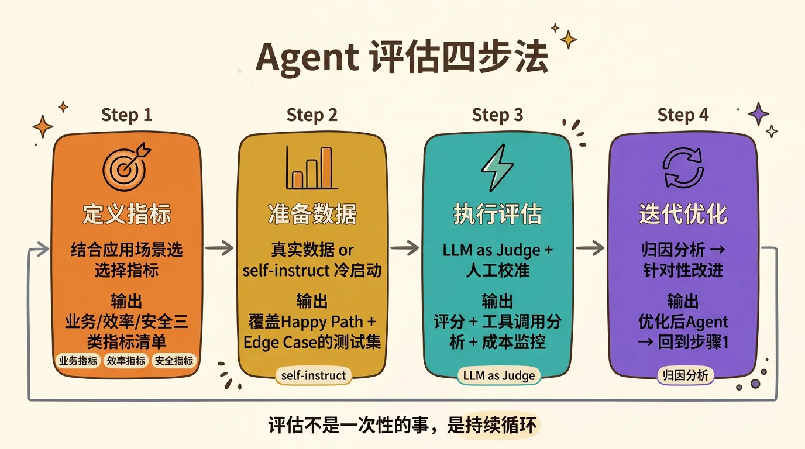
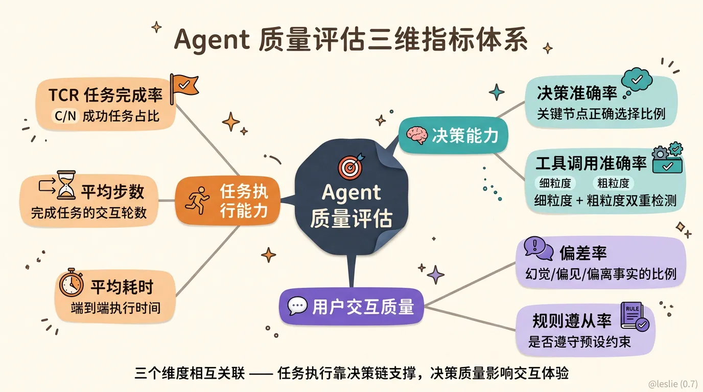
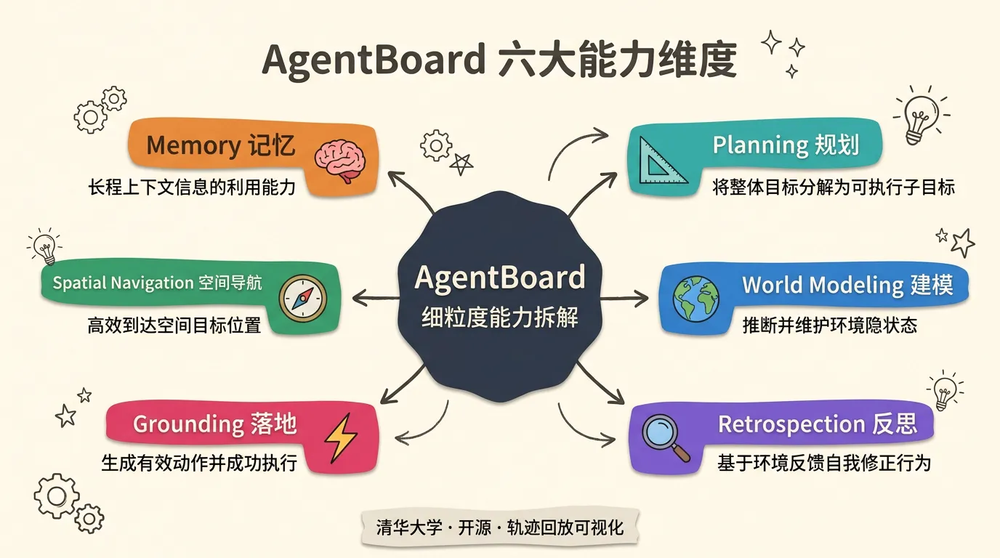
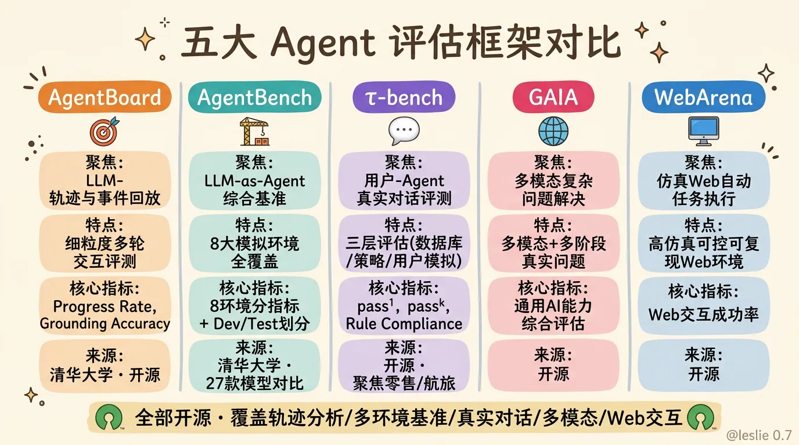
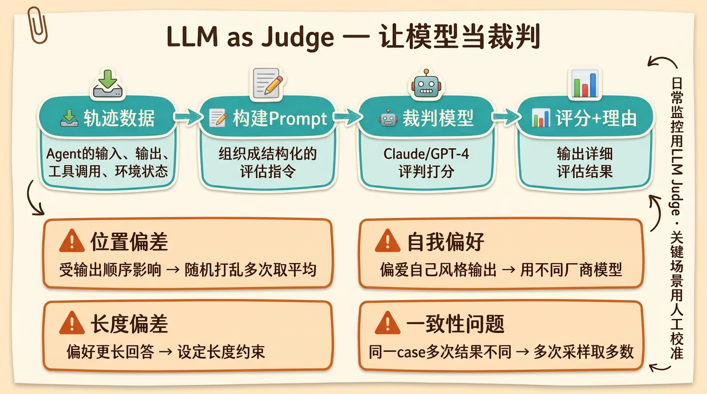
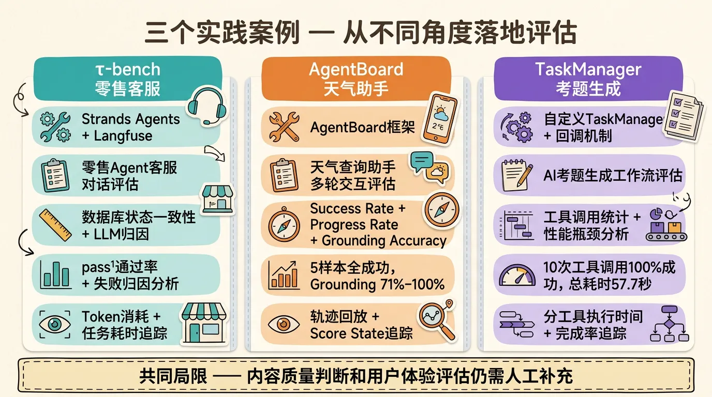
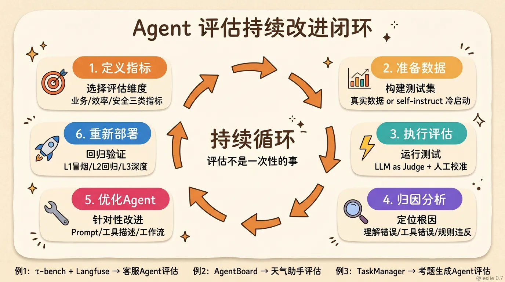

最近在研究Agent应用落地的过程中，发现一个很普遍的现象：大家花了很多精力在Agent的能力建设上——接入工具、设计Prompt、编排工作流，但很少有人认真想过一个根本问题：
这个Agent到底好不好？
不是说它跑不跑得通，而是它是不是真的可靠、高效、安全。跑通一个Demo和交付一个生产级的Agent，中间差了十万八千里。
AWS那篇《Agentic AI基础设施实践经验系列（六）：Agent质量评估》算是把这个话题讲得比较系统的。我把里面有价值的内容，结合自己的理解，整理成了这篇实践指南。
一、为什么要评估Agent
很多人觉得评估就是跑个测试看看通过率，但实际上Agent评估的必要性远不止于此。原文从四个层面讲得很清楚：
技术层面： Agent具有自主决策能力，决策偏差可能导致任务失败。在金融风控场景中，信贷审核Agent若存在决策偏差，可能错误批准高风险贷款。评估能及时发现问题，避免损失。
业务层面： Agent的表现直接影响业务价值。电商客服Agent的任务完成率和用户满意度直接关系到客户留存和销售额。评估能验证Agent是否真正满足业务需求。
伦理与合规层面： 在招聘场景中，筛选Agent如果存在性别或年龄偏见，可能违反公平就业法律。评估可以有效排查伦理和合规风险。
迭代层面： 评估结果为Agent迭代优化提供明确方向。通过分析评估数据，开发者可以精准定位薄弱环节，有针对性地改进。
还有一个重要的认知：Agent不是单一模型调用，它是一个持续决策的系统。一个Agent的运行过程本质上是一条轨迹（Trajectory）：
接收任务 → 理解意图 → 制定计划 → 选择工具 → 执行操作 → 观察结果 → 继续或终止
每一个环节都可能出错。所以Agent的评估不能只看最终结果，得看整个过程中的表现。
二、评估的一般步骤
原文给出了一个很清晰的四步流程：

第一步：定义评估的目标和指标。 结合Agent实际应用场景和期望输出选择合适的指标。不同场景关注点不同——客服场景关注任务完成率，金融场景关注决策准确率。
第二步：收集数据并准备测试。 最好使用真实场景数据构建测试集。尤其对于复杂多步骤任务，构建完整的推理步骤对于评估效果有更好的保障。
这里有个实操技巧：如果没有真实业务数据，可以通过人工创建一些示例数据，然后用self-instruct方式生成一批测试数据集来冷启动。
第三步：执行并分析结果。 最准确的评估是人工评估，但速度慢成本高。更高效的做法是用一个能力最强的模型，采用LLM as Judge方式。需要重点关注：
- 是否选择了正确的工具/函数？
- 是否在正确的上下文中传递了正确的信息？
- 是否产生了事实准确的回应？
第四步：优化测试数据集，迭代评估。 评估不是一次性的，是一个持续循环的过程。
三、核心评估指标
3.1 业务类型指标
任务完成率（TCR, Task Completion Rate）
给了N个任务，完成了C个，TCR = C/N。最直观的指标，但”完成”的定义需要明确。
- 电商客服：100个退换货咨询中85个能通过Agent自主完成（无需转人工），TCR = 85%
- 金融风控：1000笔贷款申请中920笔审批结果与人工复核一致，TCR = 92%
决策准确率
在需要做判断的节点上，Agent选对了多少次。
- 医疗辅助：100个诊断流程中关键决策步骤正确率为90%
- 供应链调度：100次调度中88次路径规划无冗余步骤，准确率88%
工具调用正确率（Tool Call Accuracy）
这是决策能力的子集但特别重要。原文特别强调了两个粒度的检测方式：
- 细粒度检测：逐个工具调用对比，以及调用工具对应参数提取正确率的对比。适合需要精确评估每一步操作的场景。
- 粗粒度检测：对比所有工具调用完成后任务环境的一致性。比如AgentBench中用虚拟Docker环境验证，或者τ-bench中检测数据库状态变更的一致性。这种方式更关注最终结果。
3.2 效率指标
平均任务耗时（Average Time）：从任务开始到结束的总时间。银行柜台辅助场景中，100笔开卡业务总耗时300分钟，平均3分钟/笔，需与人工效率对比。
平均交互轮数（Average Steps）：200个退换货咨询共1400轮对话，平均7轮/次。轮数越少，说明Agent理解能力和解决效率越高。
3.3 伦理与安全性指标
偏见发生率（Bias Rate）
- 招聘场景：1000份简历评估中30份因不合理偏见被错误筛选，偏见率3%
- 打车平台：1000次郊区订单中50次因偏见导致派单延迟，偏见率5%
这三个维度的指标不是独立的。一次好的任务执行，背后是正确的决策链在支撑；而决策的质量，又直接影响用户交互的体验。

四、主流评估框架
原文用一个表格总结了五个主流框架：
| 框架 | 主要聚焦 | 特点 |
|---|---|---|
| AgentBoard | 轨迹与事件回放 | 细粒度多轮交互评测、可视化回放 |
| AgentBench | LLM-as-Agent综合基准 | 8大模拟环境覆盖对话、游戏、文件操作等 |
| τ-bench | 用户-Agent真实对话评测 | 三层评估（数据库、策略文档、用户模拟），聚焦零售/航旅场景 |
| GAIA | 多模态复杂问题解决 | 多模态（文本、图像）、多阶段真实问题任务，考察系统性AI能力 |
| WebArena | 仿真Web自动任务执行 | 高仿真、可控、可复现的Web交互环境，覆盖电商/论坛/协作开发 |
4.1 AgentBoard：细粒度的轨迹分析
AgentBoard来自清华大学，专为多轮交互、多任务环境设计。它的核心理念是：不能只看Agent最终做没做完，要看它每一步走得怎么样。
核心组件：
| 组件 | 作用 | 关键技术 |
|---|---|---|
| 环境模拟器 | 构建部分可观测环境 | 虚拟环境、API封装，限制信息访问 |
| Agent接口 | 连接待评测Agent，支持多轮交互 | API封装，支持多模型、多策略 |
| 轨迹记录器 | 记录每轮交互的状态、动作、工具调用 | 日志存储、事件追踪 |
| 能力拆解指标计算器 | 计算进度率、探索效率、计划一致性等指标 | 规则定义、自动统计 |
| 可视化面板 | 轨迹回放、指标分析、热力图 | 前端交互、动态图表 |
评测指标：
Success Rate（成功率）：Agent在规定最大交互步数内”完全达到”环境目标的比例。单个任务要么0要么1，最终取平均值。
Progress Rate（进度率）：这是AgentBoard最有价值的指标。衡量Agent在多步任务中已完成子目标的比例。
举个例子：
1
2
3
4
5
6
7
8任务1: 完全成功 → success=1, progress=1.0
任务2: 部分完成 → success=0, progress=0.6 (3/5子目标)
任务3: 完全失败 → success=0, progress=0.2 (1/5子目标)
任务4: 完全成功 → success=1, progress=1.0
任务5: 部分完成 → success=0, progress=0.8 (4/5子目标)
Success Rate = 40% (2/5)
Progress Rate = 72% (平均进度)两个成功率相近的模型（1% vs 3.9%），进度率可能差异显著（18.9% vs 24.6%），Progress Rate能揭示真实的能力差距。
Grounding Accuracy（落地准确率）：Agent每步操作中生成”合法、可执行”动作的比例。判断标准很简单——动作执行后没有返回ERROR就认为是正确的。但这里有个重要的局限：它只检测动作有没有报错，不检测工具选择是否最优。 91.3%的准确率只说明91.3%的动作没报错，不保证这些工具选择都是最优的。
Score State（得分状态）：记录Agent执行过程中每个关键步骤的得分变化，格式为
[(step_id, score), ...]。比如(11, 1.0)表示到第11步任务完成度跳到1.0。这能反映Agent的学习曲线和进展模式。
六个能力维度：

- Memory（记忆）：长程上下文信息的利用能力
- Planning（规划）：将整体目标分解为可执行子目标的能力
- World Modeling（世界建模）：推断并维护环境隐状态的能力
- Retrospection（反思）：基于环境反馈自我反思并修正行为的能力
- Grounding（落地）：生成有效动作并成功执行的能力
- Spatial Navigation（空间导航）：在需要移动或定位的任务中高效到达目标的能力
难度分层分析： 分别统计Easy/Hard子集上的Success Rate与Progress Rate，帮助识别不同难度样本上的性能差异。
长程交互趋势（Long-Range Interaction Curve）： 展示随交互步数增加Progress Rate的变化趋势，评估Agent在长对话、长任务中的持续推进能力。
AgentBoard的局限： 原文明确指出了几个评估盲点：
- Grounding Accuracy无法判断Agent是否选择了最优工具，只要执行不报错就被认为正确
- 缺乏对生成内容质量和准确性的评估
- 没有考虑响应时间、交互友好性等用户体验因素
4.2 AgentBench：多环境基准测试
AgentBench也是清华的工作，是目前应用最广泛的多环境、多任务评测基准。
8个环境及其评测指标：
| 环境 | 评测指标 | 含义 |
|---|---|---|
| Operating System (OS) | Success Rate | 限定步数内完成文件操作、命令执行的比例 |
| Database (DB) | Success Rate | 正确生成并执行SQL查询，得到预期结果的比例 |
| Knowledge Graph (KG) | F1 Score | 输出与标准答案在精确率与召回率上的调和平均 |
| Digital Card Game (DCG) | Reward | 对战中获得的平均回合得分 |
| Lateral Thinking Puzzles (LTP) | Game Progress | 猜出剧情要点占总要点的比例 |
| House-Holding (HH) | Success Rate | 模拟家居环境中完成指定任务的比例 |
| Web Shopping (WS) | Reward | 检索并下单的综合得分（价格最优+流程效率） |
| Web Browsing (WB) | Step SR | 每一步动作成功执行的比例 |
每个环境都以Docker容器形式封装，隔离依赖与数据，确保评测可复现。
数据集划分：
- Dev集：4000+条多轮交互样本，用于内部调试和方法迭代
- Test集：13000+条多轮交互样本，用于公开leaderboard排名和最终评估
- 已对比27款开源与API-based模型的性能差异，揭示了商用模型与开源模型间的显著差距
这种多环境测试的核心价值：一个Agent在某个环境下表现好，不代表在其他环境下也好。 如果你只测了一个环境，可能会对Agent的能力产生错误的信心。
4.3 τ-bench：真实场景的对话评估
τ-bench关注Agent和真实用户交互时的表现，专门衡量Agent在真实业务场景中完成任务的可靠性、规则遵循和稳定性。
测试流程：模拟”用户–Agent–工具”三方多轮交互，Agent必须遵守特定领域规则和限制，通过比较最终数据库状态来衡量成功与否。
核心指标：
- pass¹：单次对话中一次性成功率。100次零售对话中60次正确完成退货流程，pass¹ = 60%。
- passᵏ：连续k次重复执行同一任务全部成功的概率。pass³ = 0.22表示100次任务中仅22次能连续三次都成功，反映Agent多轮反复使用时性能会显著下降。
- Rule Compliance Rate：Agent是否严格遵循领域策略文档。58次成功航旅改签对话全部按”退票再订票”规则执行，规则合规率 = 100%。
- Session Length：完成一次任务所需的平均对话轮数。
- Error Breakdown：失败对话的错误类型及占比——“未询票号””违规直改””API调用失败”等。
passᵏ 这个设计特别有价值。实际应用中用户不会因为Agent一次失败就放弃，通常会给几次机会或换个说法重新描述。passᵏ比pass¹更能反映真实体验。
4.4 GAIA与WebArena
GAIA 测评AI助手在解决现实复杂问题上的通用能力。特点是多模态（文本、图像）、多阶段真实问题任务，强调多轮推理和综合应用。任务多样、通用性强，考察系统性AI能力。
WebArena 在仿真Web环境中测试Agent的自动任务执行与复杂交互。高仿真、可控、可复现，覆盖电商、论坛、协作开发等多类网站，支持复杂任务链。

五、LLM as Judge：让模型当裁判
这是近年来AI评估领域最重要的方法论之一。
传统做法是人工标注——让真人去看Agent的每一步输出判断对不对。成本高、速度慢、一致性差。
LLM as Judge的思路是：用一个足够强的LLM扮演”裁判”角色，对被评估Agent的输出进行打分和点评。

从评估范围上，既可以对Agent最终回答进行评估，也可以对中间推理过程打分。但需要注意对评估模型推理能力和上下文窗口的要求。
四个需要注意的偏差问题：
- 位置偏差（Position Bias）：裁判模型对比两个输出时可能受顺序影响。解决：随机打乱顺序，多次评估取平均。
- 自我偏好（Self-Preference）：某些模型偏爱自己风格的输出。解决：裁判模型和被评估Agent用不同厂商的模型。
- 长度偏差（Verbosity Bias）：裁判模型偏好更长更详细的回答，即使短回答已经足够好。
- 一致性（Consistency）：同一个case跑多次结果可能不同。解决：多次采样取多数结果。
实践中靠谱的做法：LLM as Judge用于快速筛选和日常监控，人工评估用于关键场景和定期校准。
六、三个实践案例
原文最有价值的部分是三个完整的实践案例，从不同角度演示了如何落地Agent评估。

6.1 例1：τ-bench零售客服Agent评估
技术栈： Strands Agents + Langfuse
场景： 模拟τ-bench中的零售Agent（Retail Agent），评估其客服对话能力。
评估流程： Retail Agent-环境-用户三方通信：
- Retail Agent：通过调用工具或直接回应用户来执行操作
- 环境：完成所有交互，执行工具调用并传递消息
- 用户模拟：基于每个任务的instruction模拟生成真实用户响应
- 工具：Retail Agent可调用的特定领域功能
评估结果分三个层次：
(1) 数据一致性判断任务完成率
通过对比Agent执行后的数据库状态与目标状态的一致性来判断最终任务完成率。这是粗粒度的Tool调用准确率检测方式。
(2) LLM as Judge进行失败归因分析
对失败任务使用LLM进行归因分析——失败是因为理解错误、工具调用错误、规则违反、还是其他原因？这直接指导后续优化方向。
(3) Langfuse可观测性追踪
监控Agent每次任务完成时间、中间交互时间、Token消耗等。从成本和性能两个维度评估Agent的效率。
6.2 例2：AgentBoard天气助手Agent评估
场景： 天气报告助手（Weather Report Assistant），模拟面向天气查询的智能助手。
核心功能： 地理位置查询、当前/历史/预报天气查询、空气质量查询、地理信息查询、生成天气报告。
评估结果分析：
以5个测试样本为例：
1 | EXP 0: success=True, progress=1.0, grounding_acc=0.71, score_state=[(6, 1.0)] |
每个样本都成功完成了任务（success=True, progress=1.0），但Grounding Accuracy和完成步数各不相同。样本2表现最佳，仅需2步且准确率100%；样本1和4准确率较低（71.43%），说明有部分无效工具调用。
一个具体的轨迹分析案例：
查询”纽约今天天气如何”的完整交互过程：
- Turn 0：获取当前日期
- Turn 1-2：查询纽约地理坐标（第1轮格式错误，第2轮修正）
- Turn 3-4：获取温度和降雨数据
- Turn 5-6：生成回答（第5轮又出现格式错误，第6轮修正成功）
最终is_done=True, progress=1.0, 但Grounding Accuracy仅71.43%（7次交互中2次格式错误）。这个案例很好地说明了Success Rate和Grounding Accuracy的区别——任务最终完成了，但过程中有低效环节。
6.3 例3：自定义TaskManager AI考题生成Agent评估
场景： AI考题生成Agent，支持单选/多选/填空题、难度级别调整、URL/文本参考资料、中英文双语、交互式HTML页面渲染。
评估方式： 自定义TaskManager任务监控管理流程，通过回调机制与考试生成流程协同工作：
- 初始化阶段：考试生成流程创建工作流和步骤，TaskManager记录信息，回调机制建立连接
- 执行阶段：考试生成流程调用各种工具，回调捕获工具调用事件，TaskManager记录
- 完成阶段：TaskManager更新状态，生成评估报告
- 异常处理：捕获异常，记录失败信息，处理未完成的工具调用
评估报告示例：
1 | { |
从这个报告中可以快速定位性能瓶颈：validate_exam_format执行时间最长（18.62秒），是主要优化目标。各类题目生成工具执行时间相近（3.5秒左右），可以考虑并行执行。
但原文也指出这个方案的局限：能追踪工具调用和性能数据，但在最终内容质量判断（有效性/合理性）和用户体验考量方面仍存在不足。
七、可观测性：评估的基础设施
没有好的可观测性，就没有好的评估。 因为评估需要数据——Agent每一步做了什么、调用了什么工具、返回了什么结果、花了多长时间。没有系统性的记录，评估就无从谈起。
Langfuse是原文推荐的开源LLM应用可观测性平台：
- Trace追踪：记录Agent完整执行轨迹，每步输入输出都有记录
- Token消耗监控：每个任务消耗了多少Token，成本如何
- 延迟分析：各个环节的耗时分布
- 评分标注：直接在平台上对每条Trace打分，支持人工和LLM自动评分
可观测性不只是评估的工具，更是持续改进的基础。生产环境数据回流到评估体系，形成闭环：

注意这个闭环里有个关键的归因分析环节——评估完不是就结束了，还要对失败用例进行原因分析，才能针对性地优化。归因分析同样可以基于规则或使用LLM as Judge。
八、我的实践建议
把上面这些内容消化完之后，总结几条实操层面的建议：
1. 不要试图一步到位
先从最基础的任务完成率开始，能跑通再逐步叠加其他指标。评估体系是跟着Agent能力一起成长的。
2. 先定义好”完成”的标准
明确什么是”成功”、什么是”部分成功”、什么是”失败”。定义要具体到可衡量的程度。”预订机票成功”是指完成了支付，还是用户确认了订单，还是行程单发到了邮箱？
3. 建立评估数据集
覆盖三类场景：常见场景（Happy Path）、边界情况（Edge Case）、故意设计的困难场景（Adversarial Case）。数据集要持续更新，不能一劳永逸。
如果没有真实业务数据，先用self-instruct冷启动，再逐步用生产数据替换。
4. Tool调用准确率要分两个粒度
- 细粒度：逐个工具调用对比 + 参数正确率，适合精确定位问题
- 粗粒度：对比最终环境/数据状态一致性，适合快速评估
5. 评估要分层
- L1 - 冒烟测试：核心功能能不能跑通？每天跑一次
- L2 - 回归测试：改动后有没有引入新问题？每次发版前跑
- L3 - 深度评估：完整数据集全面评估，定期进行
6. 不要忘了归因分析
评估的目的不是出报告，是改进。对失败用例进行归因分析——是理解错误、工具选择错误、格式错误、还是规则违反？每个评估指标背后都应该有一个明确的优化方向。
7. 认识评估框架的局限
AgentBoard的Grounding Accuracy只检测是否报错，不检测工具选择是否最优；自定义TaskManager能追踪性能但无法评估内容质量。没有任何单一框架能覆盖所有维度，需要根据场景组合使用。
九、写在最后
Agent质量评估这件事，说难也难，说不难也不难。
难的地方在于，Agent的行为空间太大了。一个Agent可能有几十个工具可用，每个任务可能需要5-50步才能完成，每一步都有多种选择。这个组合爆炸的空间里，穷举是不可能的。
不难的地方在于，你不需要穷举。你只需要找到那些对你业务最关键的维度，建立起一套可持续运行的评估流程，然后在实践中不断迭代。
三个实践案例分别展示了不同场景下的评估落地方式：τ-bench + Langfuse适合对话式Agent，AgentBoard适合多轮交互式Agent，自定义TaskManager适合工作流式Agent。选择适合自己的方式，比追求完美更重要。
从”能用”到”好用”之间，差的不是一次完美的评估，而是一个持续评估和改进的习惯。